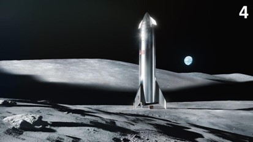

SpaceX has been involved in a wide range of missions and launches since its founding in 2002. These missions span various purposes, from satellite deployment to crewed spaceflights, scientific research, and more. Here are some notable SpaceX missions and accomplishments up to my knowledge cutoff date in September 2021: 1. Dragon COTS Demo Flights: SpaceX conducted the COTS (Commercial Orbital Transportation Services) program to demonstrate the capabilities of its Dragon spacecraft to deliver cargo to the International Space Station (ISS). 2. Commercial Resupply Missions: SpaceX's Dragon spacecraft was used for multiple resupply missions to the ISS under NASA's Commercial Resupply Services (CRS) program, delivering supplies, experiments, and equipment to the station. 3. Crewed Spaceflights: SpaceX launched its Crew Dragon spacecraft on crewed missions to the ISS as part of NASA's Commercial Crew Program. These missions marked the first time a commercial company transported astronauts to the ISS. 4. Starlink Deployment: SpaceX began deploying its Starlink satellite constellation to provide global internet coverage. Multiple batches of Starlink satellites were launched aboard Falcon 9 rockets. 5. GPS III Satellite Launch: SpaceX launched a GPS III satellite for the U.S. Space Force, contributing to the modernization of the global positioning system. 6. Falcon Heavy Test Flight: The Falcon Heavy, one of the most powerful rockets in the world, had its maiden test flight in 2018, carrying a Tesla Roadster as its payload. 7. Lunar Tourism: SpaceX announced plans to send private individuals on lunar missions using its Starship spacecraft, offering space tourism opportunities for paying customers. 8. Starship Development: SpaceX conducted multiple test flights of its Starship prototype vehicles, including the Starship SN1, SN2, SN3, and SN4, as part of the vehicle's development process. 9. Lunar Landers for NASA: SpaceX was selected by NASA as one of the providers for its Artemis program, aimed at returning humans to the Moon. SpaceX's Starship is expected to play a role as a lunar lander. 10. Crew-2 Mission: SpaceX's Crew Dragon carried astronauts on the Crew-2 mission to the ISS in 2021, further demonstrating its capabilities for human spaceflight. 11. GPS III SV04 Mission: SpaceX launched another GPS III satellite, providing advanced navigation capabilities for military and civilian users. 12. Starlink Internet Services: SpaceX began providing Starlink internet services to select regions in various countries, demonstrating its potential to provide high-speed internet access worldwide. 13. Commercial Satellite Deployments: SpaceX frequently launched commercial satellites into various orbits, including low Earth orbit (LEO) and geostationary transfer orbit (GTO), for a wide range of customers. 14. Space Science Missions: SpaceX launched missions for space science, including the Transiting Exoplanet Survey Satellite (TESS) for NASA, which searches for exoplanets. 15. National Security Payloads: SpaceX launched classified payloads for the U.S. government and national security agencies. 16. Earth Observation and Remote Sensing: SpaceX launched Earth observation satellites for environmental monitoring, weather forecasting, and disaster management. Please note that SpaceX's activities have continued beyond my knowledge cutoff date in September 2021, and the company may have accomplished additional missions and milestones since then
